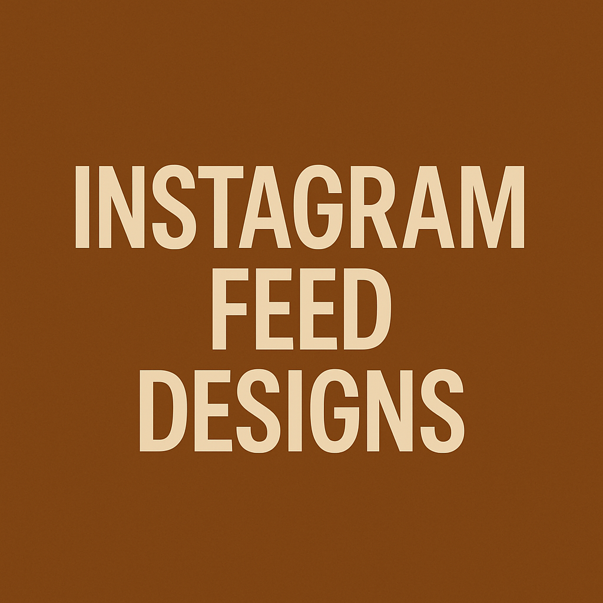

Instagram Feed Design
Ett visuellt sammanhängande Instagram-flöde skapat utifrån målgruppsanalys och varumärkesstrategi.
Läs merUtforska mina arbetsprojekt och personliga initiativ
Ett visuellt sammanhängande Instagram-flöde skapat utifrån målgruppsanalys och varumärkesstrategi.
Läs merOmfattande marknadsundersökning och strategiutveckling för Abarne, ett café i Sverige. Projektet inkluderar kundresor, moodboards och prisstrategier.
Läs mer